Aufgabe 17
Der Graph einer ganzrationalen Funktion 3. Grades
hat in (0|4) einen Hochpunkt und in (1|2) einen
Wendepunkt. Wie lautet seine Funktionsgleichung?

Wie löse ich Matheaufgaben?
Steckbriefaufgaben
Sie sehen ein gelbes Eingabefeld und die
Schalter: Prüfen und Lösung.
Tragen Sie Ihr Ergebnis ein, prüfen Sie es
oder starten Sie eine Lösung.
Aufgabe 17 Der Graph einer ganzrationalen Funktion 3. Grades hat in (0|4) einen Hochpunkt und in (1|2) einen Wendepunkt. Wie lautet seine Funktionsgleichung?
Aufgabe 18 Der Graph einer ganzrationalen Funktion 3. Grades hat in (-1|4)einen Extremwert und schneidet die x-Achse an der Stelle (-2|0) mit einer Steigung von 9. Wie lautet seine Funktionsgleichung? f(x) = x3 x + 2
Aufgabe 19 Der Graph einer ganzrationalen Funktion 3. Grades berührt an der Stelle x = 1 die x-Achse und hat in (3|-16) einen Wendepunkt. Wie lautet seine Funktionsgleichung?

Aufgabe 20 Der Graph einer ganzrationalen Funktion 3. Grades ist punktsymmetrisch zu (0|3) und berührt die x-Achse an der Stelle x = 2. Wie lautet seine Funktionsgleichung? f(x) = 0,1875x3 - x + 3
Aufgabe 21 Der Graph einer ganzrationalen Funktion 3. Grades ist punktsymmetrisch zum Nullpunkt, hat im Wendepunkt eine Steigung von - 3, und der Hochpunkt liegt auf einer Höhe von y = 2. Wie lautet seine Funktionsgleichung?

Aufgabe 22 Der Graph einer ganzrationalen Funktion 3. Grades berührt die x-Achse im Nullpunkt, und die Tangente im Punkt (-3|0) verläuft parallel zur Geraden y = 6x. Wie lautet seine Funktionsgleichung? f(x) = (2/3)x3 + x2
Aufgabe 23 Der Graph einer ganzrationalen Funktion 3. Grades hat im Punkt (1|4) eine waagerechte Tangente und bei (0|2) einen Wendepunkt. Wie lautet seine Funktionsgleichung?

Aufgabe 24 Der Graph einer ganzrationalen Funktion 3. Grades geht durch die Punkte (0|-5) und (1|0) und hat bei (5|0) einen Berührpunkt. Wie lautet seine Funktionsgleichung? f(x) = x3 - 2,2x² + 7x - 5
Aufgabe 25 Der Graph einer ganzrationalen Funktion 3. Grades geht durch den Nullpunkt, hat einen Wendepunkt bei (1|-2), und die Wendetangente schneidet die x-Achse in (2|0). Wie lautet seine Funktionsgleichung?

Aufgabe 26 Wie lautet die Funktionsgleichung des Graphen einer ganzrationalen Funktion 3. Grades, der die x-Achse an den selben Stellen wie der Graph von f(x) = 2x - 0,5x³ schneidet und wenn beide Graphen im Nullpunkt senkrecht aufeinanderstehen? f(x) = 0,125x3 - x
Aufgabe 27 Der Graph einer ganzrationalen Funktion 3. Grades tangiert an der Stelle x = 0 die x-Achse und hat in (2/3|- 16/27) einen Wendepunkt. Wie lautet seine Funktionsgleichung? 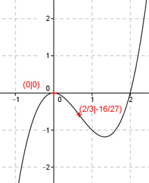
Aufgabe 28 Der Graph einer ganzrationalen Funktion 3. Grades hat im Nullpunkt einen Wendepunkt und im Punkt (2|-4) die Steigung 2. Wie lautet seine Funktionsgleichung? f(x) = x3 - 4x
Aufgabe 29 Der Graph einer ganzrationalen Funktion 3. Grades geht durch den Punkt (0|0), hat bei x = 3 einen Extremwert, und seine Normale im Wendepunkt (2/3|f(2/3)) hat die Steigung 3/49. Wie lautet seine Funktionsgleichung?

Aufgabe 30 Der Graph einer ganzrationalen Funktion 3. Grades hat bei x = 2/3 einen Wendepunkt, schneidet an der Stelle x = -2 die x-Achse, und die Normale f(x) = (5/3)x - 5/3 schneidet ihn an der Stelle x = 1. Wie lautet seine Funktionsgleichung? f(x) = 0,1x3 - 0,2x2 - 0,5x +
Aufgabe 31 Der Graph einer ganzrationalen Funktion 3. Grades geht durch den Nullpunkt, hat bei (1|1) ein Maximum und einen Wendepunkt bei (3|f(3)). Wie lautet seine Funktionsgleichung?

Aufgabe 32 Der Graph einer ganzrationalen Funktion 3. Grades ist punktsymmetrisch zum Nullpunkt, geht durch (1|-1) undhat einen Extremwert an der Stelle x = 2. Wie lautet seine Funktionsgleichung? f(x) = ( /11)x3 - (12/11)x
Aufgabe 33 Der Graph einer ganzrationalen Funktion 3. Grades hat an der Stelle x = -1 eine Nullstelle, schneidet die y-Achse an der Stelle y = 2 und berührt die x-Achse an der Stelle x = 2. Wie lautet seine Funktionsgleichung?

Aufgabe 34 Der Graph einer ganzrationalen Funktion 3. Grades berührtdie x-Achse im Koordinatenursprung, geht durch den Punkt(-3|0) und hat dort die Steigung 9. Wie lautet seine Funktionsgleichung? f(x) = x3 + x²
Aufgabe 35 Der Graph einer ganzrationalen Funktion 3. Grades geht durch den Nullpunkt, hat bei x = 2 eine waagerechte Tangente, bei x = 4 einen Wendepunkt und dort eine Steigung von -4. Wie lautet seine Funktionsgleichung? 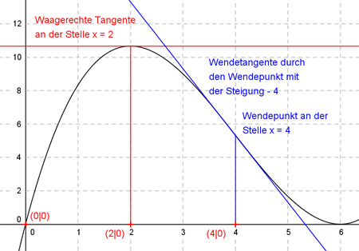
Aufgabe 36 Wie lautet die Funktionsgleichung des Graphen einer ganzrationalen Funktion 3. Grades, der die x-Achse an der Stellex = -2 schneidet, bei (0|0) einen Wendepunkt hat und deren Wendetangente die Gleichung f(x) = (1/3)x hat? f(x) = (-1/ )x3 + (1/3)x
Aufgabe 37 Der Graph einer ganzrationalen Funktion 3. Grades schneidet die x-Achse bei -2 und 3 und hat einen Hochpunkt bei (0|7,2). Wie lautet seine Funktionsgleichung?

Aufgabe 38 Der Graph einer ganzrationalen Funktion 3. Grades geht durch den Koordinatenursprung, hat bei x = 6 eine Nullstelleund bei x = 3 einen Wendepunkt mit der Steigung - 3. Wie lautet seine Funktionsgleichung? f(x) = (1/3)x3 - 3x2 + x
Aufgabe 39 Der Graph einer ganzrationalen Funktion 3. Grades geht durch den Koordinatenursprung, schneidet bei x = 6 die x-Achse, und die Wendetangente durch (0|0) hat die Gleichung y = 2x. Wie lautet seine Funktionsgleichung?

Aufgabe 40 Der Graph einer ganzrationalen Funktion 3. Grades schneidet die x-Achse an den Stellen 0 und -3 und hat bei (3|-6) ein Minimum. Wie lautet seine Funktionsgleichung? f(x) = (1/6)x3 - (1/3)x2 - x
Aufgabe 41 Der Graph einer ganzrationalen Funktion 3. Grades berührt an der Stelle x = 4 die x-Achse, hat bei x = 8/3 einen Wendepunkt und eine Wendetangente mit der Steigung -4/3. Wie lautet seine Funktionsgleichung? 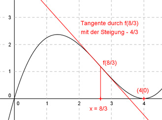
Aufgabe 42 Der Graph einer ganzrationalen Funktion 3. Grades berührt die x-Achse an der Stelle x = 4 und hat bei (2|3) einen Wendepunkt. Wie lautet seine Funktionsgleichung? f(x) = 0,1875x3 - x2 + 6
Aufgabe 43 Der Graph einer ganzrationalen Funktion 3. Grades hat bei (3|0,8) einen Hochpunkt, an der Stelle x = 4 einen Wendepunkt und eine Wendetangente mit der Steigung -0,6. Wie lautet seine Funktionsgleichung? 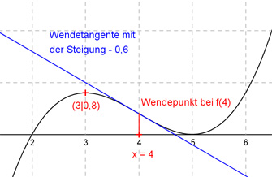
Aufgabe 44 Der Graph einer ganzrationalen Funktion 3. Grades schneidet die x-Achse bei -1,5, hat bei (-0,5|4,5) einen Hochpunkt und an der Stelle x = 2/3 einen Wendepunkt. Wie lautet seine Funktionsgleichung? f(x) = x3 - 2x2 - 2,75x +
Aufgabe 45 Der Graph einer ganzrationalen Funktion 3. Grades schneidet die x-Achse bei -3, hat dort eine Steigung von -12,5 und bei x = -4/3 und x = 2 Extremstellen. Wie lautet seine Funktionsgleichung?

Aufgabe 46 Der Graph einer ganzrationalen Funktion 3. Grades berührt die x-Achse an der Stelle x = -2 und hat dort die Krümmung -2,5, die Tangente an der Stelle x = 3 hat die Steigung 6,25. Wie lautet seine Funktionsgleichung? f(x) = 0,25x3 + x2 - 2x - 3
Aufgabe 47 Der Graph einer ganzrationalen Funktion 3. Grades schneidet die x-Achse bei -1, hat dort die x-Achse als Tangente und einen Tiefpunkt bei (0|-1). Wie lautet seine Funktionsgleichung?

Aufgabe 48 Der Graph einer ganzrationalen Funktion 3. Grades hat einen Wendepunkt bei (-1|0), dort eine waagerechte Tangente, und seine Steigung an der Stelle x = 1 beträgt 12. Wie lautet seine Funktionsgleichung? f(x) = 3x3 + 3x2 + x + 1
Aufgabe 49 Der Graph einer ganzrationalen Funktion 3. Grades schneidet die x-Achse an der Stelle x = -1, die y-Achse bei y = -4 und hat einen Wendepunkt bei (1|-2). Wie lautet seine Funktionsgleichung?

Aufgabe 50 Wie lautet die Funktionsgleichung einer Funktion 3. Grades der Form f(x) = x3 - ax2 + bx + c, wenn sie einen Wendepunkt bei (2|3) und dort eine Tangente parallel zur x-Achse hat? f(x) = x3 + 6x2 + x - 5
Aufgabe 51 Der Graph einer ganzrationalen Funktion 3. Grades geht durch die Punkte (0|1), (1|0), (-1|4) und (2|-5). Wie lautet seine Funktionsgleichung?

Aufgabe 52 Der Graph einer ganzrationalen Funktion 3. Grades geht durch die Punkte (0|-1), (1|1), (-1|-7) und (2|17). Wie lautet seine Funktionsgleichung? f(x) = x3 - 2x2 + x - 1
Aufgabe 53 Alle Graphen einer ganzrationalen Funktion 3. Grades gehen durch die Punkte (1|0), (0|2), (-2|2). Wie lautet die Funktionsgleichung dieser Kurvenschar?

Aufgabe 54 Der Graph einer ganzrationalen Funktion 3. Grades geht durch die Punkte (2|0), (-2|4), (-4|8) und hat einen Hochpunkt auf der y-Achse. Wie lautet seine Funktionsgleichung? f(x) = - x3 + (5/6)x2 + 16/3
Aufgabe 55 Der Graph einer ganzrationalen Funktion 3. Grades geht durch (2|2), (3|9) und hat in (1|1) einen Wendepunkt mit waagerechter Tangente. Wie lautet seine Funktionsgleichung?

Aufgabe 56 Der Graph einer ganzrationalen Funktion 3. Grades berührt die x-Achse im Koordinatenursprung und hat eine Tangente am Punkt (-3|0), die parallel zur Geraden y = 6x verläuft. Wie lautet seine Funktionsgleichung? f(x) = (2/3)x3 + x2
Aufgabe 57 Der Graph einer ganzrationalen Funktion 3. Grades hat im Punkt (1|4) einen Extremwert und im Punkt (0|2) einen Wendepunkt. Wie lautet seine Funktionsgleichung? 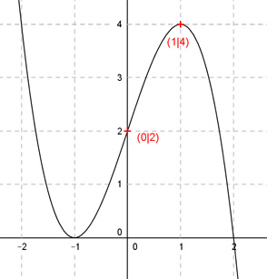
Aufgabe 58 Die Graphen von ganzrationalen Funktionen 3. Grades sind punktsymmetrisch zum Koordínaten- ursprung und haben an der Stelle x = 2 einen Extremwert. Wie lautet deren Funktionsgleichung? f(x) = ax3 - x
Aufgabe 59 Die Graphen von ganzrationalen Funktionen 3. Grades haben einen Wendepunkt mit der Wende- tangente y = x im Koordínatenursprung. Wie lautet deren Funktionsgleichung?

Aufgabe 60 Der Graph einer ganzrationalen Funktion 3. Grades geht durch die Punkte (-2|2), (0|2), (2|2) und berührt die x-Achse. Wie lautet seine Funktionsgleichung? f(x) = √3x3 - 1,5√3x + 2
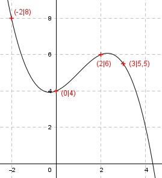Aufgabe 61 Der Graph einer ganzrationalen Funktion 3. Grades geht durch die Punkte (2|6), (0|4), (3|5,5) und (-2|8). Wie lautet seine Funktionsgleichung?
Aufgabe 62 Der Graph einer ganzrationalen Funktion 3. Grades hat einen Wendepunkt bei (0|1) und an den Stellen x = -1 und 3 jeweils den Funktionswert 3. Wie lautet seine Funktionsgleichung? f(x) = (1/3)x3 - ( /3)x + 1
Aufgabe 63 Der Graph einer ganzrationalen Funktion 3. Grades berührt im Koordinatenursprung die x-Achse und hat einen Hochpunkt bei (2|2). Wo liegen seine Nullstellen?
Aufgabe 64 Der Graph einer ganzrationalen Funktion 3. Grades geht durch die Punkte (1|6), (2|24,5), (3|59) und (4|112,5). Wie lautet seine Funktionsgleichung? f(x) = x3 + 5x2 + 0,5
Aufgabe 65 Der Graph einer ganzrationalen Funktion 3. Grades hat im Punkt (2|14) eine Wendetangente mit der Steigung 15 und eine Nullstelle bei x = 1. Wie lautet seine Funktionsgleichung?

Aufgabe 66 Der Graph einer ganzrationalen Funktion 3. Grades hat im Punkt (0|1) eine Wendetangente mit der Steigung -24 und Hoch- und Tiefpunkt liegen jeweils zwei Einheiten von der y-Achse entfernt. Wie lautet seine Funktionsgleichung? f(x) = x3 - 24x + 1
Aufgabe 67 Der Graph einer ganzrationalen Funktion 3. Grades schneidet die x-Achse an der Stelle x = -3, hat dort eine Tangente, die parallel zur Geraden y = -12,5x + 1 verläuft und an den Stellen x = -4/3 und x = 2 Extremstellen. Wie lautet seine Funktionsgleichung? 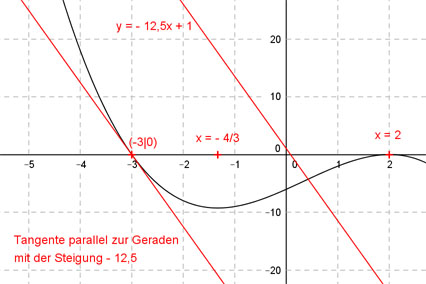
Aufgabe 68 Der Graph einer ganzrationalen Funktion 3. Grades hat im Punkt (1|3) die Steigung 3 und im Punkt (0|4) einen Wendepunkt. Wie lautet seine Funktionsgleichung? f(x) = 2x3 - x + 4
Aufgabe 69 Von einer Funktion der Form f(x) = ax3 + bx2 + cx + d sind b = -7 und Null- stellen bei -2 und -4 bekannt. Weiterhin geht sie durch den Punkt (0|0,25). Wie lautet die Funktionsgleichung? 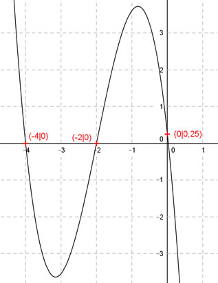
Aufgabe 70 Der Graph einer ganzrationalen Funktion 3. Grades berührt an der Stelle x = 1 die x-Achse und hat im Punkt (3|2) eine Tangente parallel zur Geraden y = -2,25x. Wie lautet seine Funktionsgleichung? f(x) = - x3 + 5,8125x2 - 8,4375x + 3,6875
Aufgabe 71 Der Graph einer ganzrationalen Funktion 3. Grades hat in (3|f(3)) eine Tangente mit der Funktions- gleichung y = 11x - 27 und bei (1|0) einen Wendepunkt. Wie lautet seine Funktionsgleichung? 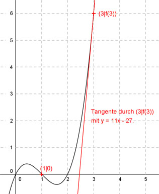
Aufgabe 72 Der Graph einer ganzrationalen Funktion 3. Grades geht durch die Punkte (-2|0), (-1|0), (3|0) und (0|2). Wie lautet seine Funktionsgleichung? f(x) = - (1/3)x3 + ( /3)x + 2
Aufgabe 73 Der Graph einer ganzrationalen Funktion geht durch die Punkte (1|0) und (5|0) und hat ein Maximum bei (3|2). Wie lautet seine Funktionsgleichung? 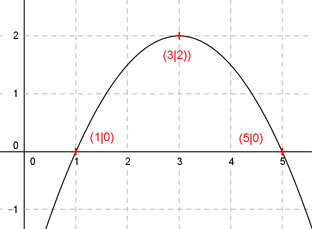
Aufgabe 74 Der Graph einer ganzrationalen Funktion 3. Grades hat ein Maximum bei (2|4) und ein Minimum bei (1|1). Wie lautet seine Funktionsgleichung? f(x) = - 6x3 + 27x2 - x + 16
Aufgabe 75 Der Graph einer ganzrationalen Funktion 3. Grades wechselt bei x = 1 das Vorzeichen, berührt bei x = 2 die x-Achse und geht durch den Punkt (3|4). Wie lautet seine Funktionsgleichung? 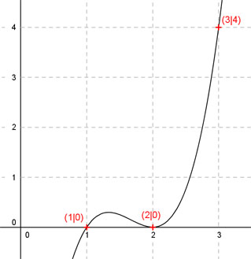
Aufgabe 76 Der Graph einer ganzrationalen, zu (0|0) punkt- symmetrischen Funktion 3. Grades, hat im Punkt (1|0) die Steigung -3. Wie lautet seine Funktionsgleichung? f(x) = - 1,5x3 + x2
Aufgabe 77 Der Graph einer ganzrationalen Funktion 3. Grades hat bei (2|1) einen Wendepunkt und im Punkt (-1|0) die Steigung 2. Wie lautet seine Funktionsgleichung?

Aufgabe 78 Der Graph einer ganzrationalen Funktion 3. Grades geht durch den Koordinatenursprung, hat in (4|-4/3) einen Wendepunkt mit einer Steigung von 1. Wie lautet seine Funktionsgleichung? f(x) = -(1/ )x3 + x2 - 3x
Aufgabe 79 Der Graph einer ganzrationalen Funktion 3. Grades hat einen Extremwert bei (1|2) und an der Stelle x = 2 einen Wendepunktmit der Steigung -1. Wie lautet seine Funktionsgleichung?

Aufgabe 80 Der Graph einer punktsymmetrischen ganzrationalen Funktion 3. Grades hat im Wendepunkt (0|0) die Steigung -3 und an der Stelle x = 1 einen Extremwert. Wie lautet seine Funktionsgleichung? f(x) = x3 - x
zurück